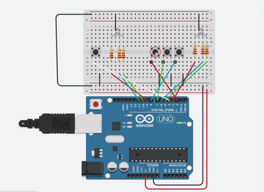

Minimal Viable Product

Arduino based LED game
Do you think you can differentiate between 1000 different colors? Lets see if you can beat this game.
It all started when I was looking around TinkerCAD for some project topics and I came across an ardiuno simulation created by SoftLogic. After few days of brainstorming on what I should make using the simulator which is both practical and somewhat fundamental, I started making this game using RGB LEDs and other electronic components (mentioned on the side).
Here is everything you need to know about this project:
1. Using push button to send analog signals
2. Arduino processes that input and runs it throught different algorithms
3. Push button changes the RGB configeration on the variable LED
4. Fix LED gives out a random color (Possible Colors: 1000)
5. Try to match the fixed LED with the variable LED
Future Plans
Here is everything I plan on doing in future with this project.
1. Update the loops and algorithms to make the program more efficient2. Have a new algorith that resets the game on its own once the user fails/passes.
3. Add an additional button that makes the RGB values go down
4. Have a display that prints the RGB value user has.
5. Have all the data sent through wifi to see everything thats going on with the circuit on a mobile device.

How to play?
1. To start, click the push button on the left side.
2. You should see a random color on the LEFT LED.
3. Take a moment and observe the color
4. There are 3 buttons on the right side, RED-GREEN-BLUE
5. Use these buttons to change the RGB proportion on the RIGHT LED
6. Your goal is to match the color to the random color produced by arduino in the first step.
7. You have 90 seconds to finish
8. Use the reset button located on the arduino board to reset the game and start over.
Components Used
Click on each component to view its discription...
1 x Arduino Uno R3
2 x RGB LED
4 x Push Button
6 x 220 Ω Resistor
20 x Jumper Wire
Latest Version of Arduino Code
void RGB_color(int red_light_value, int green_light_value, int blue_light_value){
analogWrite(red, red_light_value);
analogWrite(green, green_light_value);
analogWrite(blue, blue_light_value);
Serial.print("The RGB value is ");
View full code here.